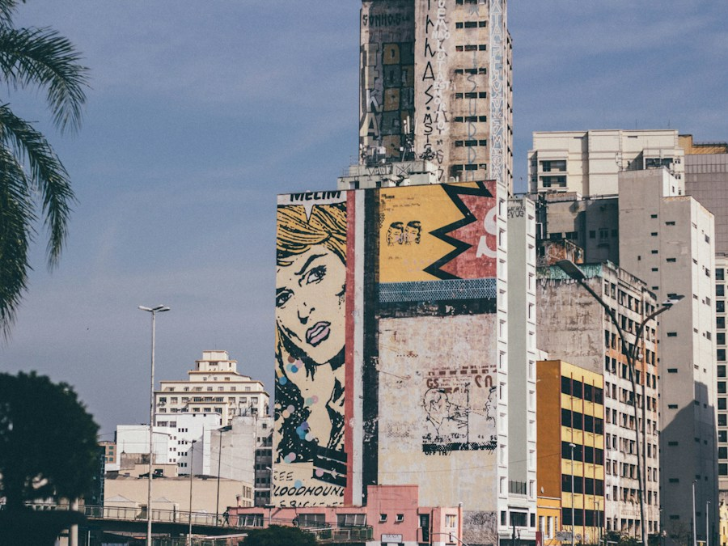
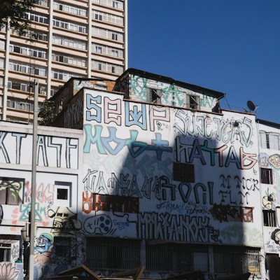
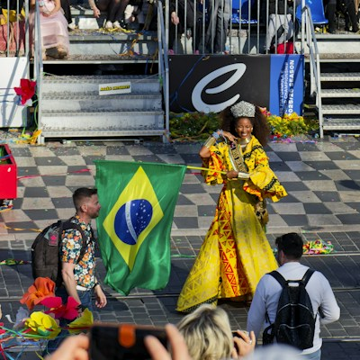
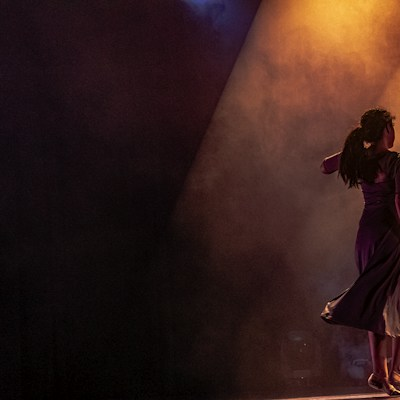
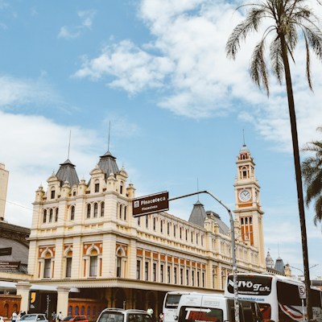
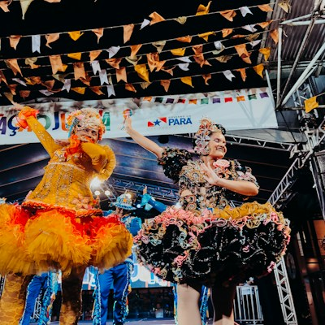

Curadoria real
Cada lugar foi visitado, pesquisado e recomendado de verdade. Sem anúncio, sem jabá.
✦ Sobre o projeto
Um guia criado por paulistanos para paulistanos — e pra quem quer descobrir o que São Paulo esconde além do óbvio.
Conceito
O nome PAULICEIA vem de Pauliceia Desvairada, o livro de Mário de Andrade que inaugurou o Modernismo brasileiro em 1922. Para Mário, São Paulo era uma cidade contraditória, caótica, humana — e por isso extraordinária.
Esse espírito que nunca sossega? São Paulo é muito mais do que o centro, a Paulista e o Ibirapuera. É cada bairro, cada pessoa, cada história que ainda está sendo escrita por aqui.
A PAULICEIA existe para mostrar esses lugares — com respeito, com alegria, e com a linguagem da geração que vai neles.

“São Paulo acaba aqui? Nem perto. A cidade tem muito mais do que você imagina — só precisa de alguém para te mostrar onde olhar.”
— Equipe Pauliceia
Feito pra você
Cada lugar foi visitado, pesquisado e recomendado de verdade. Sem anúncio, sem jabá.
Filtra por tipo de rolê: cultura, natureza, comida, diferente ou aleatório.
Como chegar, quanto custa, horários, mapas, dicas e o que fazer lá.
Todos os lugares no mapa. Clica no pin e descobre o rolê.
Pensado para acessibilidade real: contraste, tamanho de texto e foco.
Funciona em qualquer tela, celular ou computador. Explore de onde quiser.
Time por trás

Co-fundador
Programação

Idealizadora do projeto
Pesquisa e conteúdo

Co-criadora
Design

Co-criador
Programação

Co-criador
Criação
É o lugar esperando por você. Encontre um rolê e vá de boa.